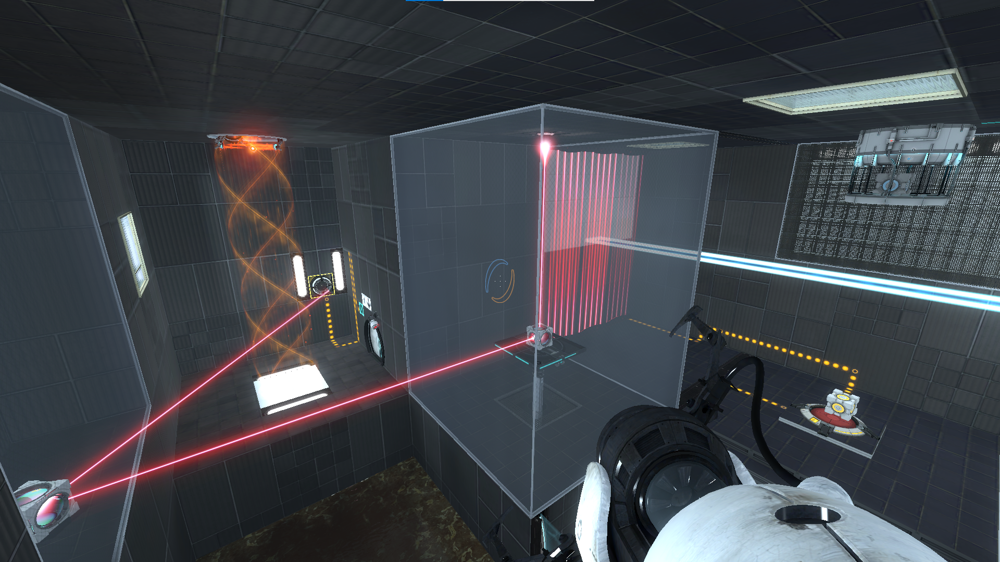

Videogame Levels
Levels I made for fun using games like Portal 2 and Super Meat Boy
Portal 2
I made a lot of Portal 2 levels using Valve’s editor and the community-made extension tool BEEmod (https://github.com/BEEmod/BEE2.4/releases). I had a lot of fun and learned a lot, but the levels aren’t great looking back since I was inexperienced and made most of it when I was 13 or 14. If you want to check out my levels, go to my Steam workshop.

Super Meat Boy
I also made Super Meat Boy levels around the same time, when I was 13-14 years old. The editor is pretty unintuitive so I had to find an online tutorial before I could even use it. This was after Super Meat World, the platform used to share Super Meat Boy levels, shut down—I had no way of publishing my levels. Looking back this might be a good thing, since a lot of my levels were highly experimental—the only game I had played before was Minecraft. I might upload the levels here someday, but know that they aren’t great (they are very very difficult though).